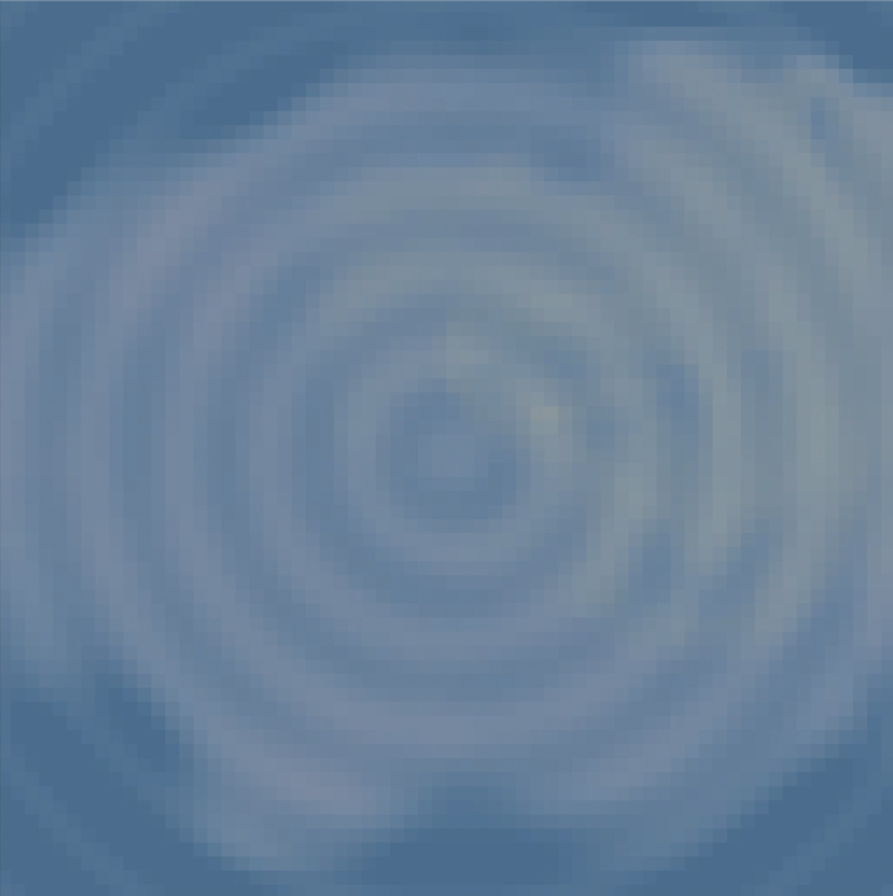

<div id="portfolio-page" class="portfolio-page-content">
    <div class="container">
        <div class="portfolio-nav">
            <div id="portfolio-close-button" class="portfolio-close-button"><a href="#portfolio"><i
                        class="fa fa-close"></i></a></div>
        </div>
        <div class="portfolio-title text-center">
            <h1>Interactive Fluid Simulation</h1>
        </div>
        <div class="row">
            <div class="col-sm-7 col-md-7 portfolio-block">
                <!-- <div class="owl-carousel portfolio-page-carousel"> -->
                    <!-- <div class="item"></div> -->
                    <!-- <div class="item"></div> -->
                    <!-- <div class="item"></div> -->
                <!-- </div> -->
                <div class="portfolio-page-video embed-responsive embed-responsive-16by9">
                        <iframe class="embed-responsive-item" src="https://player.vimeo.com/video/648995172?h=770bb9b5a8" width="640" height="564" frameborder="0"></iframe>
                        <!-- allow="autoplay; fullscreen" allowfullscreen -->
                </div><!-- <div class="portfolio-page-image"></div>-->
                <!-- <script
                    type="text/javascript">jQuery(document).ready(function ($) { $('.portfolio-page-carousel').owlCarousel({ smartSpeed: 1200, items: 1, loop: true, dots: true, nav: true, navText: false, margin: 10 }) });</script> -->
                <!-- Tags -->
                <div class="tags-block">
                    <!-- <div class="block-title">
                        <h3>Tags</h3>
                    </div> -->
                    <ul class="tags">
                        <li><a>NatureOfCode</a></li>
                        <li><a>ColorDiffusion</a></li>
                        <li><a>Simulation</a></li>
                    </ul>
                </div><!-- /Tags -->
                <br>
                <ul class="project-general-info">
                    <!-- <li>
                        <p><i class="fa fa-book"></i><a
                                href=""
                                target="_blank">Documentation</a></p>
                    </li> -->
                    <li>
                        <p><i class="fa fa-code"></i>P5.js</p>
                    </li>
                    <li>
                        <p><i class="fa fa-calendar"></i>May, 2019</p>
                    </li>
                </ul>
            </div>
            <div class="col-sm-5 col-md-5 portfolio-block">
                <p class="testimonial-text"><i>This is an individual project based on P5.js. It simulates the movement of 
                    colors in water and provides an interactive model for users to experience color diffusion, where they 
                    can also create some appealing visuals. Users can change colors and adjust the viscosity of water. 
                    Along with some other choices, users can drag the mouse and explore the color mobility in water.</i></p>
                <!-- Project Doc -->
                <div class="block-title">
                    <h3>Background</h3>
                </div>
                <p class="text-justify">I was inspired by marbling, an interesting activity with colored water. I tried to 
                    create digital color diffusion through P5.js. In this project, I mainly explored the motion of water, 
                    the mixture of color, the movement of the mouse, the balance and various shapes.
                </p>
                <div class="block-title">
                    <h3>Main Calculation</h3>
                </div>
                <p class="text-justify">Flow field is a way of looking at fluid motion that focuses on specific locations 
                    in the space through which the fluid flows as time passes. The calculation in this project borrows its 
                    conception and is pixel-based. For each pixel with value x0, there are 4 nearest pixels with values x1, 
                    x2, x3, x4 such that the final value of the pixel x = [x0 + a * (x1 + x2 + x3 + x4)] * c
                </p><!-- /Project Doc -->

                
                <!-- Share Buttons -->
                <!-- <div class="btn-group share-buttons">
                    <div class="block-title">
                        <h3>Share</h3>
                    </div><a href="#" target="_blank" class="btn"><i class="fa fa-facebook"></i></a><a href="#"
                        target="_blank" class="btn"><i class="fa fa-twitter"></i></a><a href="#" target="_blank"
                        class="btn"><i class="fa fa-dribbble"></i></a>
                </div> -->
                <!-- /Share Buttons -->
            </div>
        </div>
    </div>
</div>